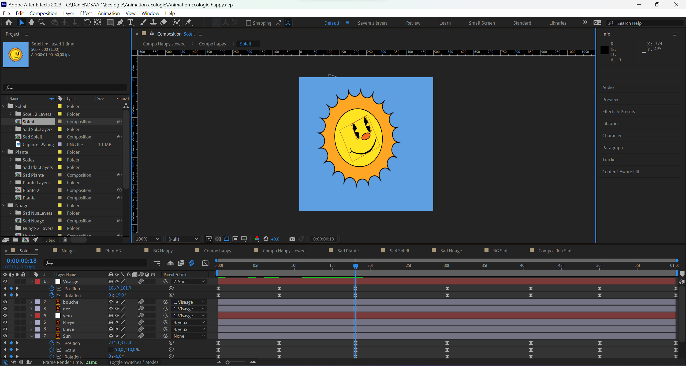
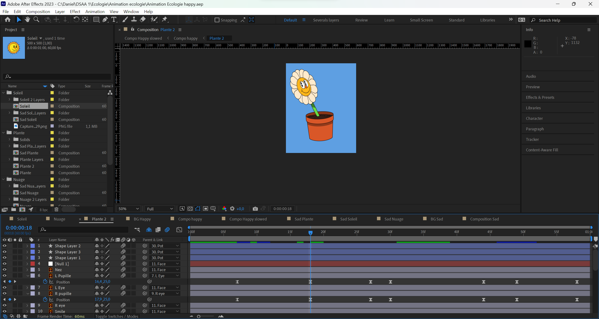
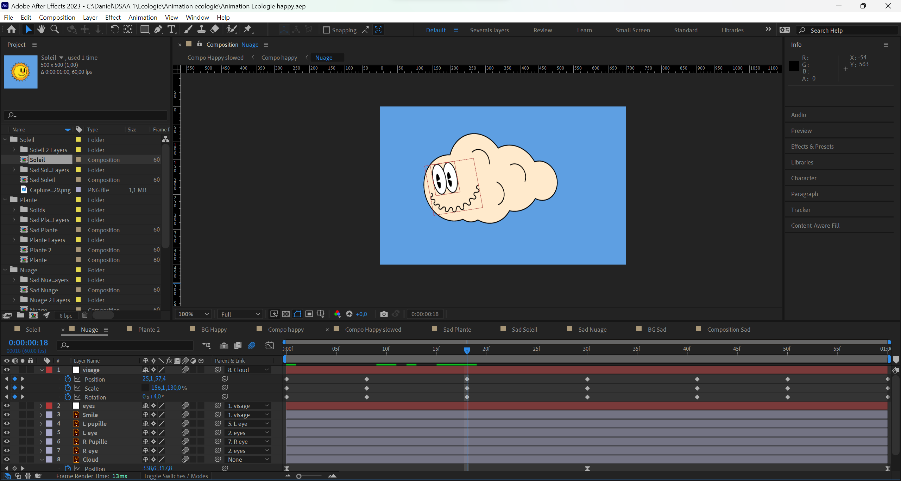
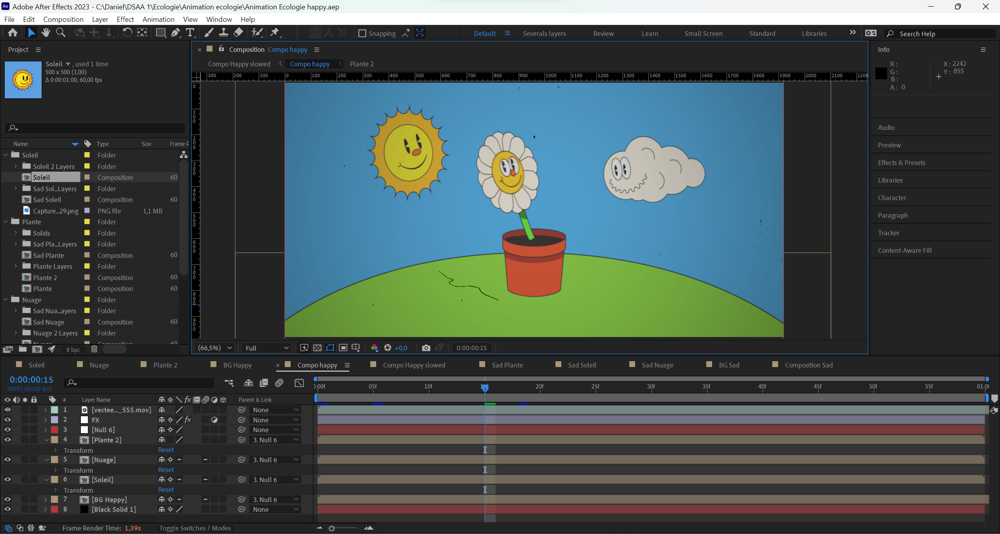
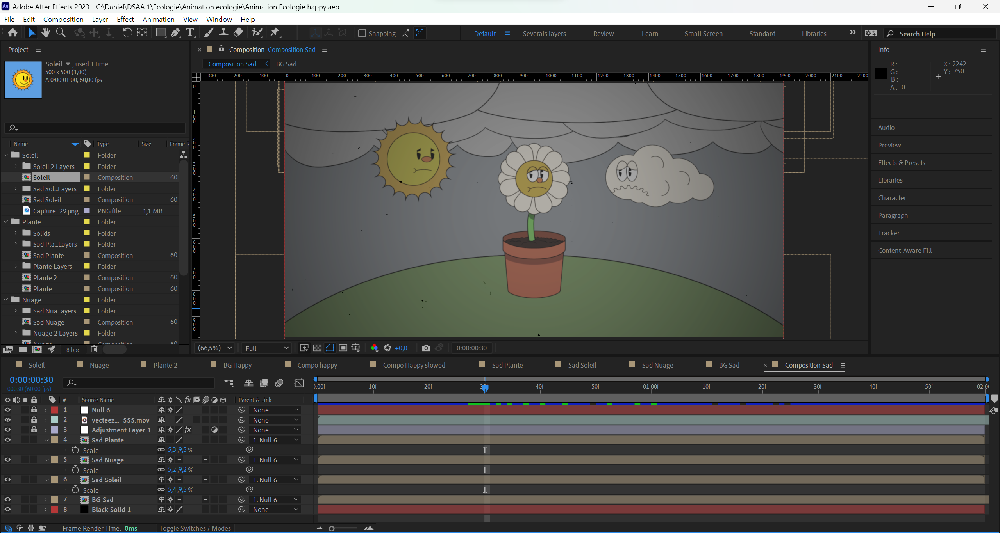

The plants senses
This project is an ecology project that aims to illustrate that plants have senses. For this project, I chose to illustrate the perception of music that plants have. Indeed, according to some studies, some plants would have an attraction for music and would grow in better condition in an environment with music.




